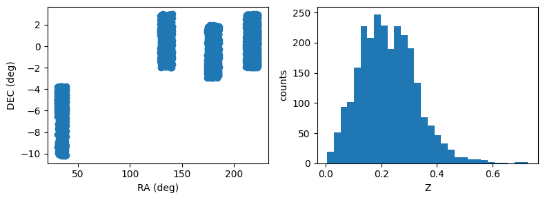
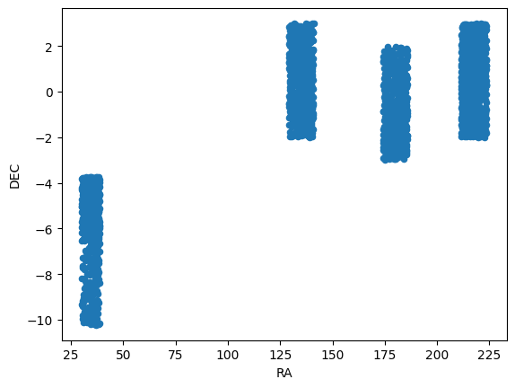

Photo-z Server
Tutorial Notebook 1 - Spec-z Catalogs
Contact author: Julia Gschwend
Last verified run: 2024-Jul-22
Introduction
Welcome to the PZ Server tutorials. If you are reading this notebook for
the first time, we recommend not to skip the introduction notebook:
0_introduction.ipynb also available in this same repository.
Imports and Setup
from pzserver import PzServer
import matplotlib.pyplot as plt
%reload_ext autoreload
%autoreload 2
# pz_server = PzServer(token="<your token>", host="pz-dev") # "pz-dev" is the temporary host for test phase
For convenience, the token can be saved into a file named as
token.txt (which is already listed in the .gitignore file in this
repository).
with open('token.txt', 'r') as file:
token = file.read()
pz_server = PzServer(token=token, host="pz-dev") # "pz-dev" is the temporary host for test phase
Product types
The PZ Server API provides Python classes with useful methods to handle particular product types. Let’s recap the product types available:
pz_server.display_product_types()
| Product type | Description |
|---|---|
| Spec-z Catalog | Catalog of spectroscopic redshifts and positions (usually equatorial coordinates). |
| Training Set | Training set for photo-z algorithms (tabular data). It usually contains magnitudes, errors, and true redshifts. |
| Validation Results | Results of a photo-z validation procedure (free format). Usually contains photo-z estimates (single estimates and/or pdf) of a validation set and photo-z validation metrics. |
| Photo-z Table | Results of a photo-z estimation procedure. If the data is larger than the file upload limit (200MB), the product entry stores only the metadata (instructions on accessing the data should be provided in the description field. |
Spec-z Catalogs
In the context of the PZ Server, Spec-z Catalogs are defined as any catalog containing spherical equatorial coordinates and spectroscopic redshift measurements (or, analogously, true redshifts from simulations). A Spec-z Catalog can include data from a single spectroscopic survey or a combination of data from several sources. To be considered as a single Spec-z Catalog, the data should be provided as a single file to PZ Server’s upload tool. For multi-survey catalogs, it is recommended to add the survey name or identification as an extra column.
Mandatory columns: * Right ascension [degrees] - float *
Declination [degrees] - float * Spectroscopic or true redshift -
float
Recommended columns: * Spectroscopic redshift error - float *
Quality flag - integer, float, or string * Survey name
(recommended for compilations of data from different surveys)
Spec-z Catalogs can be uploaded by users on PZ Server website or via the
pzserver library. Also, they can be created as the combination of a
list of other Spec-z Catalogs previously registered in the system by the
PZ Sever’s pipeline “Combine Spec-z Catalogs” (under development). Any
catalog built by the pipeline is automaticaly registered as a regular
user-generated data product and has no difference from the uploaded
ones.
Let’s see an example of Spec-z Catalog:
gama = pz_server.get_product(14)
Connecting to PZ Server...
Done!
gama.display_metadata()
| key | value |
|---|---|
| id | 14 |
| release | None |
| product_type | Spec-z Catalog |
| uploaded_by | gschwend |
| internal_name | 14_gama_specz_subsample |
| product_name | GAMA spec-z subsample |
| official_product | False |
| pz_code | |
| description | A small subsample of the GAMA DR3 spec-z catalog (Baldry et al. 2018) as an example of a typical spec-z catalog from the literature. |
| created_at | 2023-03-29T20:02:45.223568Z |
| main_file | specz_subsample_gama_example.csv |
Display basic statistics
gama.data.describe()
| ID | RA | DEC | Z | ERR_Z | FLAG_DES | |
|---|---|---|---|---|---|---|
| count | 2.576000e+03 | 2576.000000 | 2576.000000 | 2576.000000 | 2576.0 | 2576.000000 |
| mean | 1.105526e+06 | 154.526343 | -1.101865 | 0.224811 | 99.0 | 3.949534 |
| std | 4.006668e+04 | 70.783868 | 2.995036 | 0.102571 | 0.0 | 0.218947 |
| ... | ... | ... | ... | ... | ... | ... |
| 50% | 1.103558e+06 | 180.140145 | -0.480830 | 0.217804 | 99.0 | 4.000000 |
| 75% | 1.140619e+06 | 215.836583 | 1.170363 | 0.291810 | 99.0 | 4.000000 |
| max | 1.176440e+06 | 223.497080 | 2.998180 | 0.728717 | 99.0 | 4.000000 |
8 rows × 6 columns
The spec-z catalog object has a very basic plot method for quick visualization of catalog properties. For advanced interactive data visualization tips, we recommend the notebook DP02_06b_Interactive_Catalog_Visualization.ipynb from Rubin Observatory’s DP0.2 tutorial-notebooks repository.
gama.plot()

The attribute data, which is a DataFrame preserves the plot
method from Pandas.
gama.data.plot(x="RA", y="DEC", kind="scatter")
<Axes: xlabel='RA', ylabel='DEC'>

Users feedback
Is something important missing? Click here to open an issue in the PZ Server library repository on GitHub.